Overview
We are going to be building a lot of SMD PCBs, so we wanted a reflow oven. However, consumer reflow ovens are very expensive and require a lot of mods to work well, so my brother and I turned a $50 Hamilton Beach toaster oven into our own. It worked, but the temperature controller was tuned by trial and error: change a gain, run a cycle, wait for the oven to cool down, and try again. It was good enough to solder boards, but I couldn't really explain why the gains were what they were.
In spring 2026, I took a controls class (EECE 5580), and for the final project, I decided to go back and do it properly. This time, I modeled the oven from measured data, designed the controller with the math I learnt in class, simulated it in Simulink, and then ran it on the real oven.
Background
To solder SMD components with solder paste, the board has to follow a specific temperature profile. I use lead-free paste, and its profile has four stages:
- Preheat: ramp from room temperature (25°C) to 150°C in about 90 seconds.
- Soak: slowly climb from 150°C to 175°C over the next 90 seconds so the flux activates and the whole board heats up evenly.
- Reflow: ramp up past the melting point of the solder (217°C) to a peak of 249°C at the 240-second mark.
- Cooling: bring the temperature back down. My oven doesn't have active cooling, so this part isn't controlled.
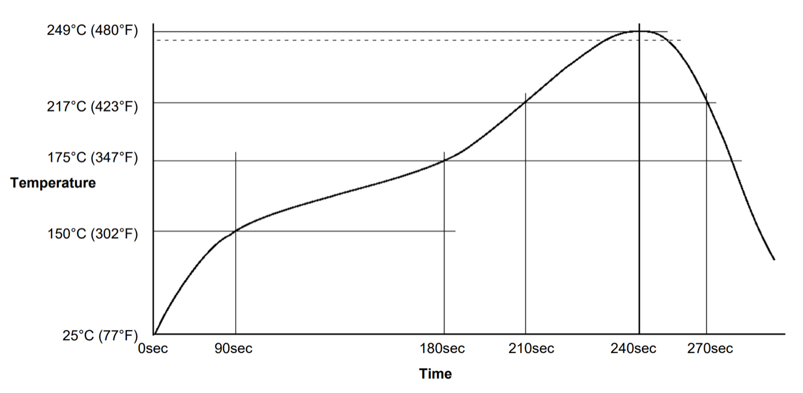
What makes this hard is that the oven is slow and delayed. When the heater turns on, the temperature sensor doesn't see anything for a while because the heat has to travel through the air and metal in the oven first. That delay is called dead time, and it's the main reason my old trial-and-error tuning was so painful.
Hardware
Before getting into the controller, here's what it's actually driving. When we first built the oven, we wanted it to fit a medium-sized board and look clean, with no wires dangling around. Here's a quick look at the build:
- Oven: a Hamilton Beach toaster oven, lined with a ceramic blanket and aluminum reflective tape to hold in heat.
- Heater: the heating elements are switched by a solid-state relay. The ESP32 drives the relay with a PWM duty cycle from 0 to 255, which is the input the controller gets to adjust.
- Sensor: a PT100 RTD probe inside the oven cavity measures the temperature that the controller feeds back on.
- Controller board: a custom PCB I designed in KiCad and had fabricated by JLCPCB, so there are no loose wires. It holds the ESP32, terminal blocks, status LEDs, and a buzzer, and runs off a 12V 1A power supply.
- Interface: a 240 x 320 SPI touch display with a GUI I designed in Adobe Illustrator, mounted in a 3D-printed face plate designed in Fusion 360.
Put together, the control loop is simple: the RTD measures the oven temperature, the ESP32 computes a duty cycle, and the solid-state relay turns the heater on and off to match it. Everything in the rest of this project lives in the ESP32's firmware.
PCB design
I designed a custom PCB to make sure there are no loose wires lying around. This PCB was designed in KiCad and fabricated using JLCPCB.
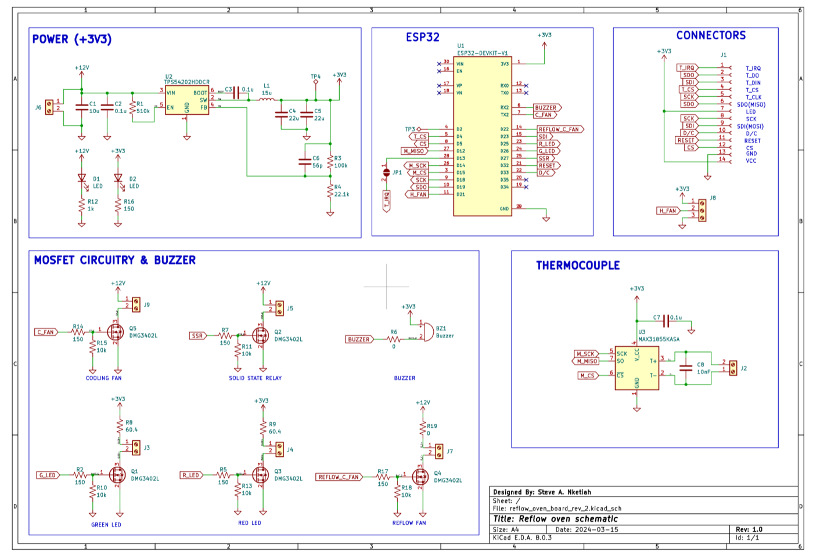
Schematic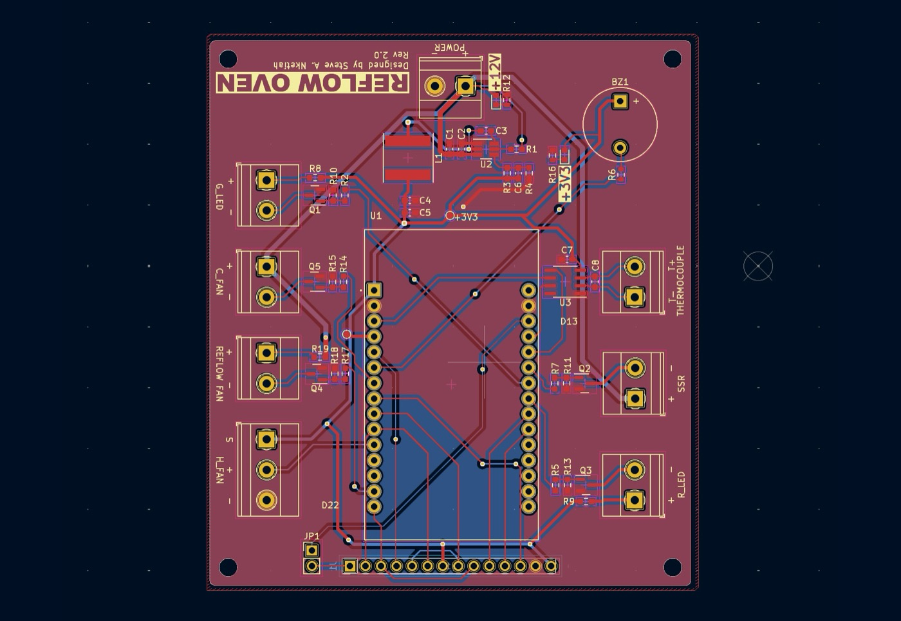
Layout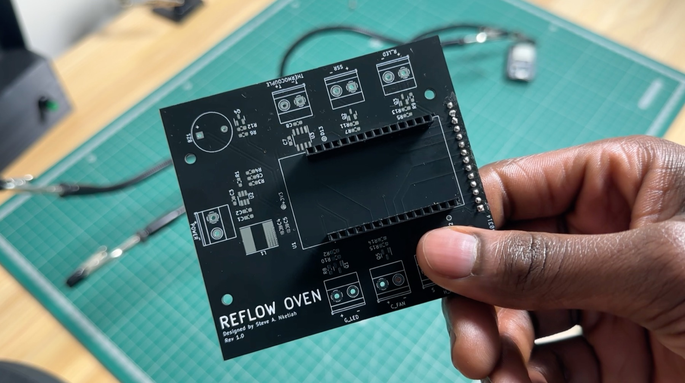
Face plate
The face plate was designed in Fusion 360 and it was fabricated using a 3D printer.
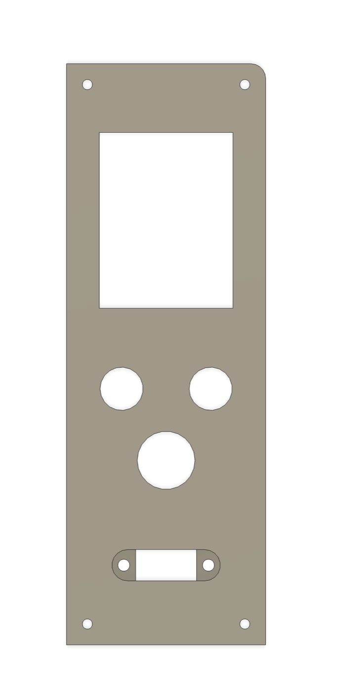
Firmware
The code was developed in Arduino using Platform.io for the ESP32. It was structured as a state machine, with state transitions triggered by touch commands to ensure efficient and organized control flow.
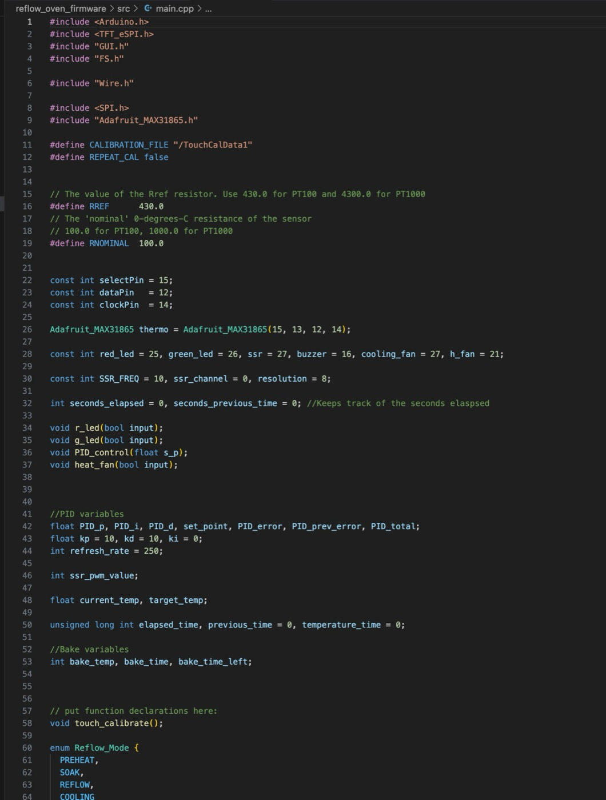
main.cpp, ending in the Reflow_Mode states.GUI
The GUI was designed in Adobe Illustrator, with the pages exported and converted into a .c file for deployment on the ESP32. The live graph was rendered using the drawPixel function from the TFT_eSPI library.
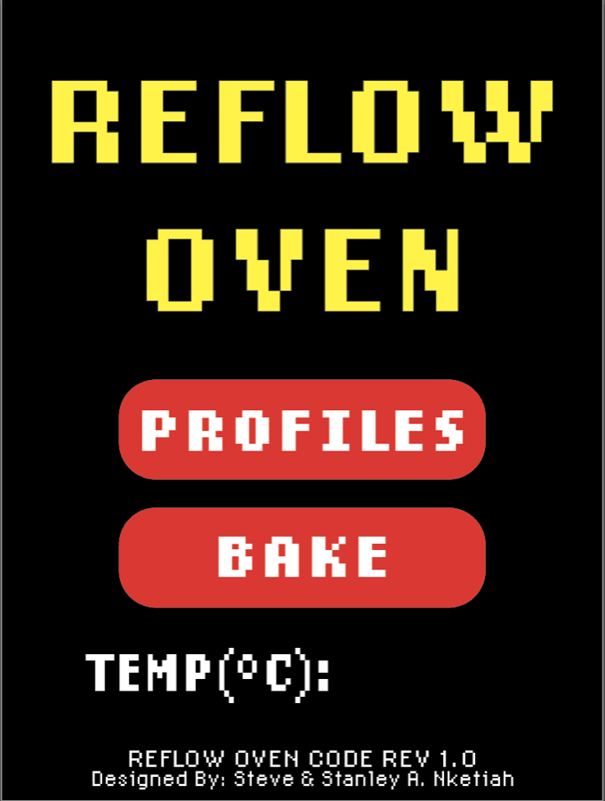
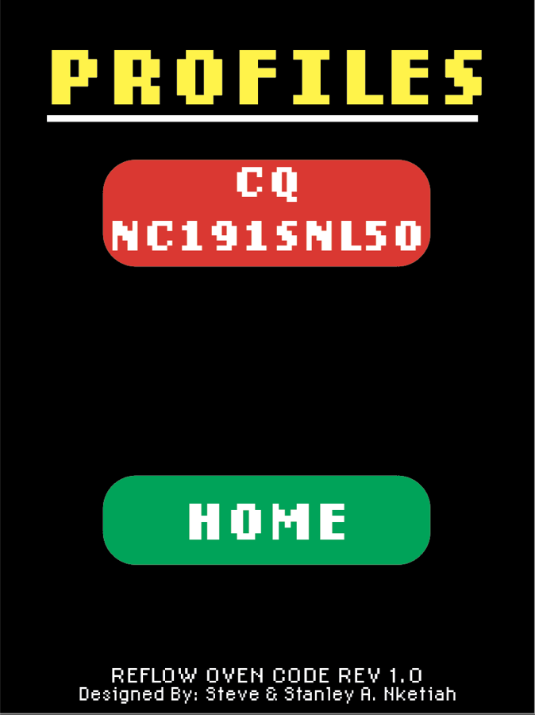
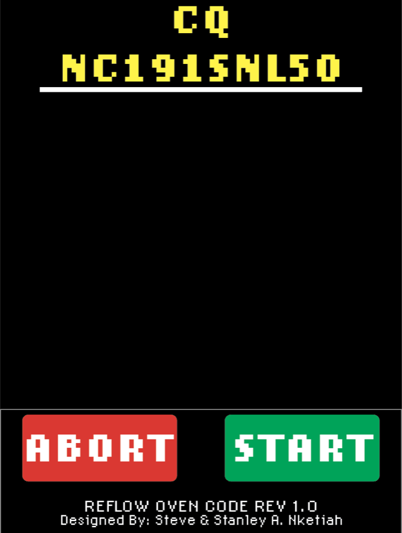
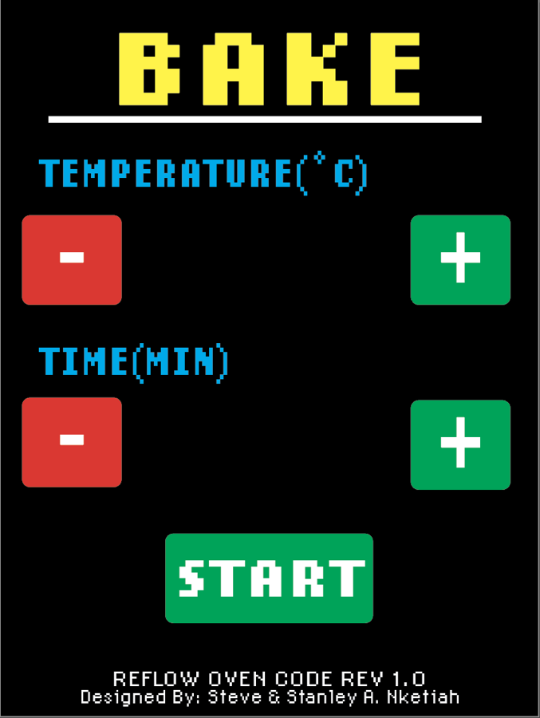
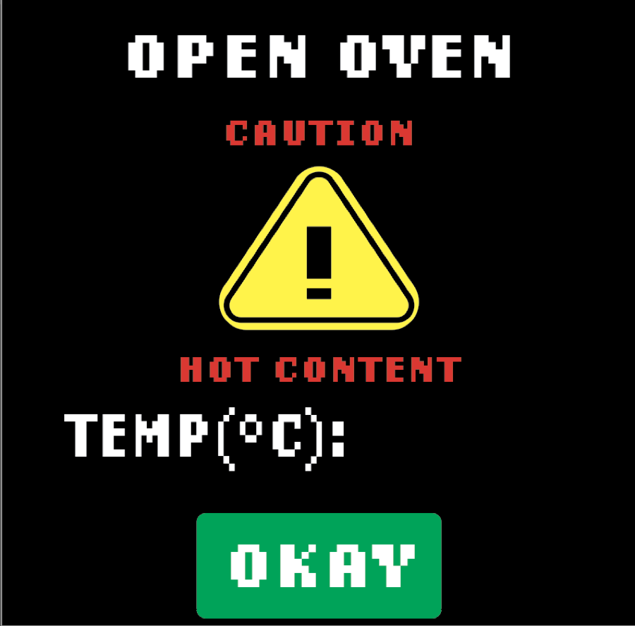
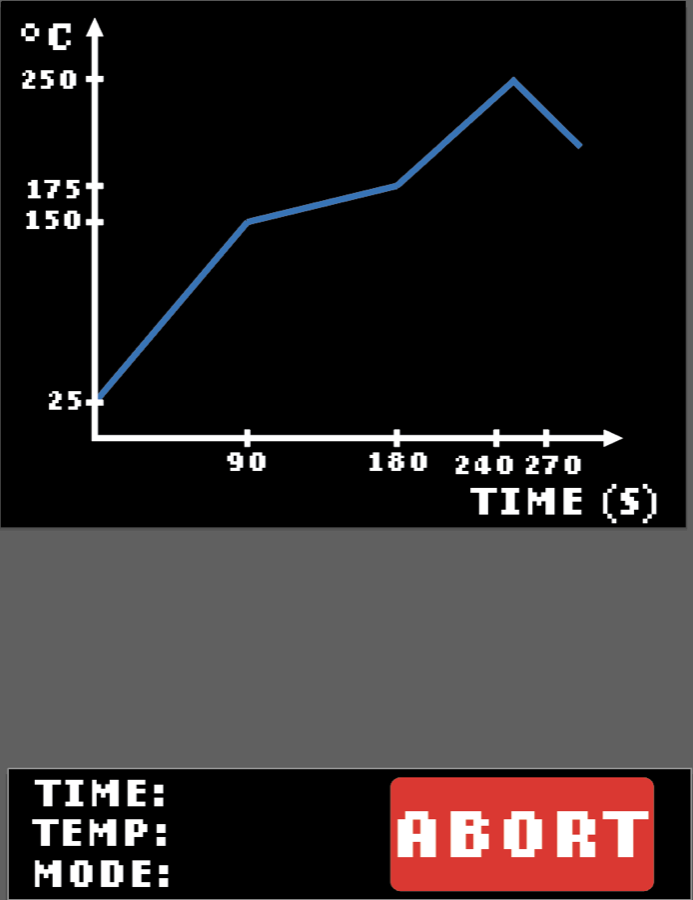
Parts list
- Hamilton Beach toaster oven (link)
- Panasonic Solid State relay AQA211VL
- PT100 RTD Temperature Sensor (link)
- Ceramic Blanket (link)
- Aluminum reflective tape
- 240 x 320 SPI Display
- ESP32
- 12V 1A Power Supply (link)
- Cooling Fan
- Green LED
- Red LED
- Buzzer
- Switch
- Relay
- Terminal Blocks
- USB-C to Micro USB cable
Design goals
- The oven temperature must stay within ±5°C of the reflow profile.
- No hardware changes. The oven was already modified, so this is purely a controller and firmware upgrade.
- Math first. The controller must be designed from a model of the oven and verified in simulation before it touches the real oven.
Modeling the oven
Thermal systems like this are usually modeled as a first-order plus dead-time (FOPDT) system:
\(K\) is the gain (how hot the oven eventually gets for a given heater duty cycle), \(\tau\) is the time constant (how fast it gets there), and \(\theta\) is the dead time. To find these values, I ran bump tests: starting from room temperature, I set the heater to a fixed duty cycle and logged the temperature every second until it stopped rising. I did this at 4 different duty cycles and fit the FOPDT model to each run using a least-squares curve fit in Python (I wrote the script with some help from Claude). Below are the results.
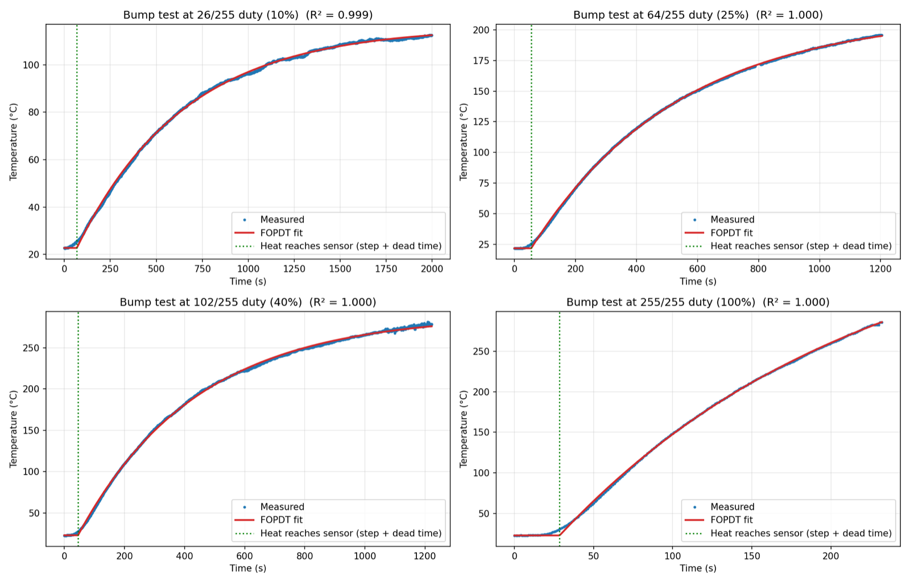
The model fits all 4 tests really well (R² above 0.999 for every one), so the FOPDT model is a good description of the oven.
| Duty (of 255) | Normalized input | K (°C) | τ (s) | θ (s) |
|---|---|---|---|---|
| 26 | 0.10 | 913.0 | 585.7 | 52.7 |
| 64 | 0.25 | 760.0 | 482.9 | 40.0 |
| 102 | 0.40 | 666.5 | 395.3 | 29.6 |
| 255 | 1.00 | 404.8 | 193.7 | 19.5 |
The first thing I noticed was that the numbers change a lot depending on the duty cycle. \(K\) and \(\theta\) both drop by about half from the lowest to the highest duty cycle, so the oven isn't really a linear system. I picked the 40% duty model because it sits near the middle of what the reflow profile demands on average:
Since the numbers vary this much, whatever controller I designed would have to handle a model that isn't exactly right.
Controller design
Why PI?
Most of the reflow profile is a ramp, not a constant setpoint. The oven model has no integrator in it, so a proportional-only controller (or the PD controller I had before) would fall further and further behind a ramp. Adding an integrator (a PI controller) fixes that, and the steady-state error to a ramp becomes a finite value:
\(R\) is the ramp rate. So the plan was: use a PI controller and choose the gains so this error is less than 5°C.
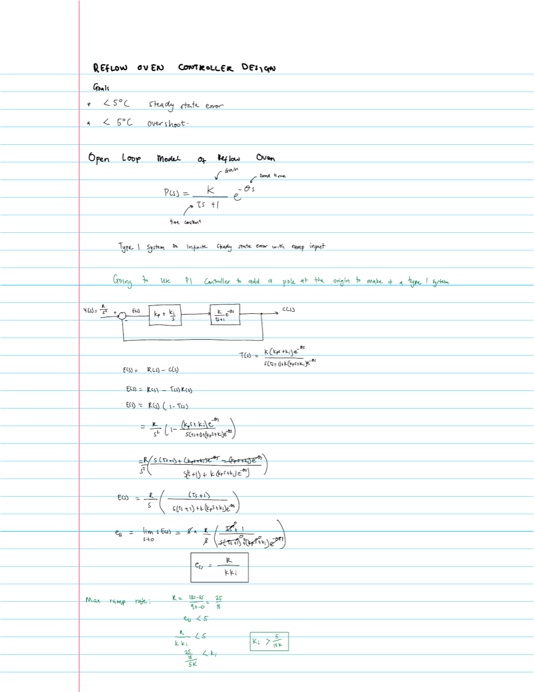
SIMC tuning
To pick the gains, I used the SIMC tuning rules by Sigurd Skogestad. The idea is to pick the closed-loop response you want and solve for the controller that gives you that response. I chose a first-order response with the same dead time as the oven, since you can't get rid of the dead time:
Approximating the dead time with a first-order Taylor expansion (\(e^{-\theta s} \approx 1 - \theta s\)) and simplifying gives the PI gains:
Here, \(\tau_c\) is the closed-loop time constant. It's the one knob you get to turn: smaller is faster and more aggressive, larger is slower and safer.
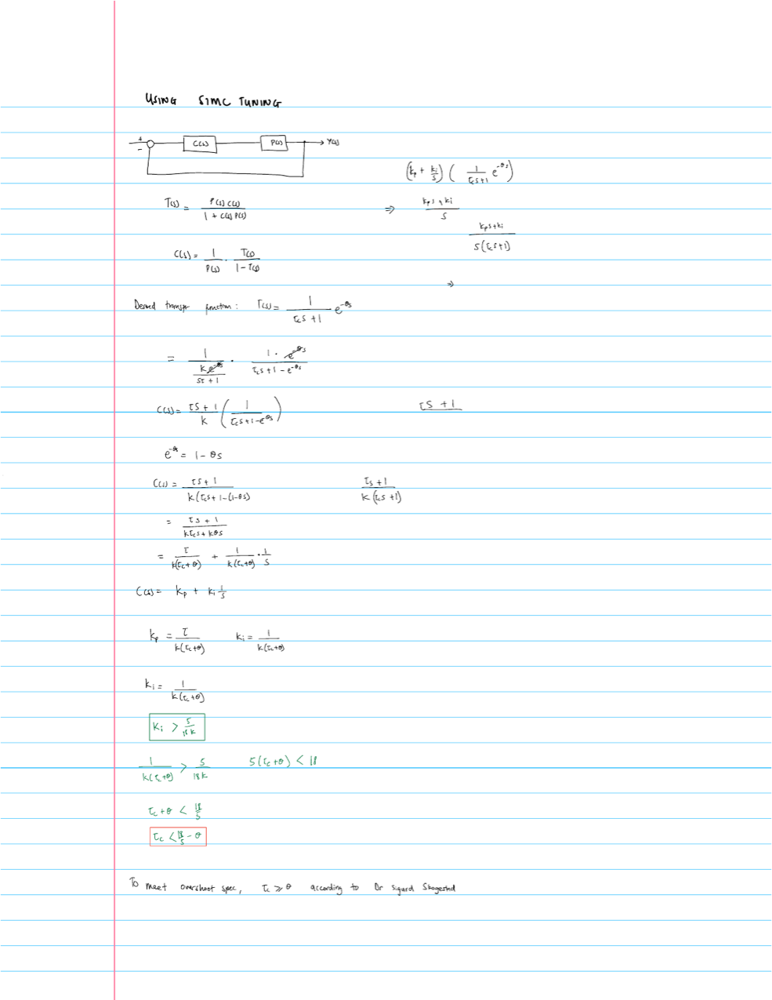
PI alone isn't enough
The steepest part of the profile is the preheat ramp, which goes from 25°C to 150°C in 90 seconds:
Plugging the SIMC gains into the steady-state error equation and requiring it to be less than 5°C gives:
The closed-loop time constant would have to be negative, which is impossible. The dead time alone (29.6 s) is already way bigger than the 3.6 s budget. No matter how I tuned it, a PI controller by itself could not track this ramp within 5°C. This was the point where I realized why my old controller needed so much trial and error.
Adding feedforward
The fix is to stop making the feedback controller do all the work. Since I have a model of the oven, I can use it to calculate ahead of time how much heater power is needed to follow the ramp. Inverting the plant at low frequency gives:
\(r(t)\) is the current reference temperature and \(R\) is the current ramp rate. The \(r(t)/K\) part is the power needed to hold the oven at that temperature, and the \(\tau R/K\) part is the extra power needed to keep climbing at rate \(R\). On top of that, I advance the reference by \(\theta\) seconds, so by the time the heat actually reaches the sensor, it lines up with the profile.
The PI controller stays in the loop, but now it only has to clean up whatever small error is left over from the model not being perfect.
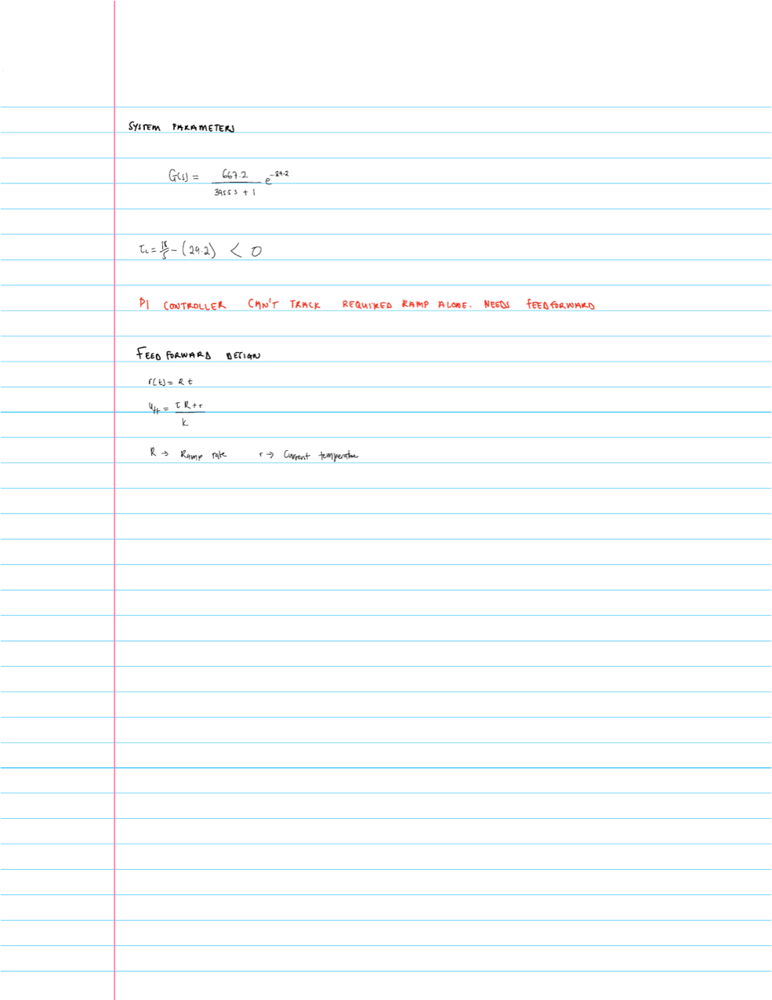
Simulation
I built the whole system in Simulink: the reflow profile and its derivative (for the ramp rate \(R\)), the feedforward block, the PI controller, a saturation block (since the heater duty cycle can only go from 0 to 100%), and the FOPDT oven model with the dead time.
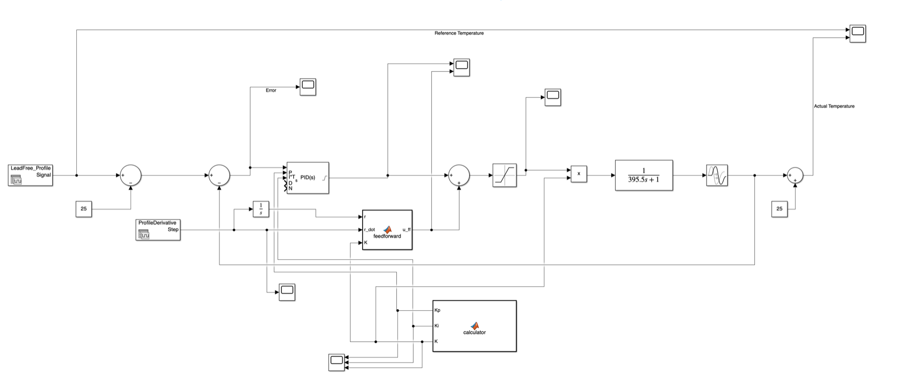
With the PI + feedforward controller, the simulated oven temperature sits right on top of the reference for the entire profile. The tracking error is less than a degree.
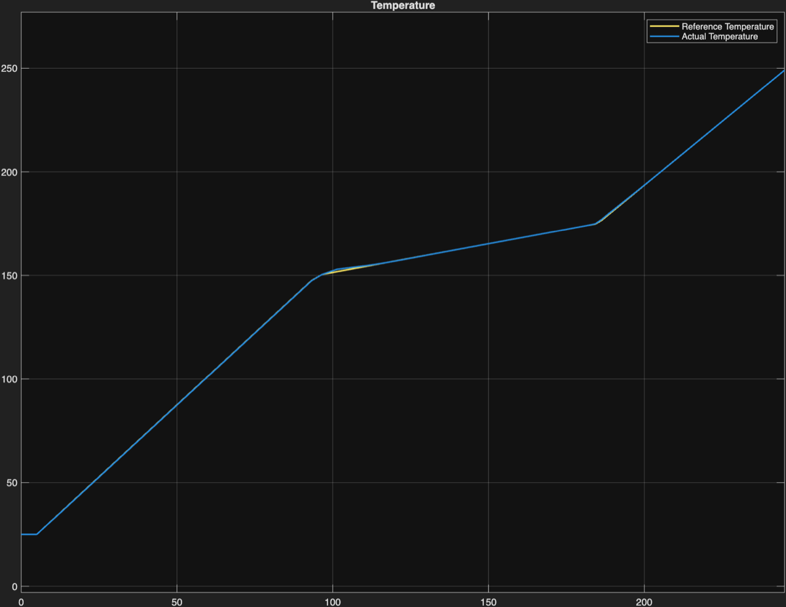
Temperature (°C)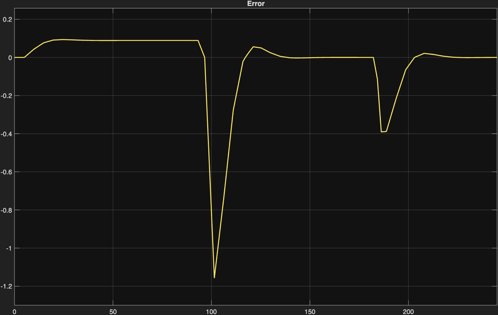
Error (°C)At this point, I was feeling pretty good about it. Then I ran it on the oven.
Testing on the oven
First hardware run
I implemented the controller in the oven's firmware on the ESP32 and ran a full reflow cycle. The error went past ±15°C, about three times my spec. The oven ran way ahead of the setpoint on the preheat ramp and again at the start of the reflow stage.
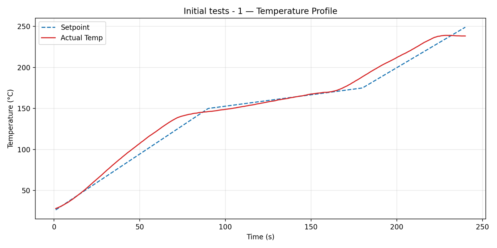
Temperature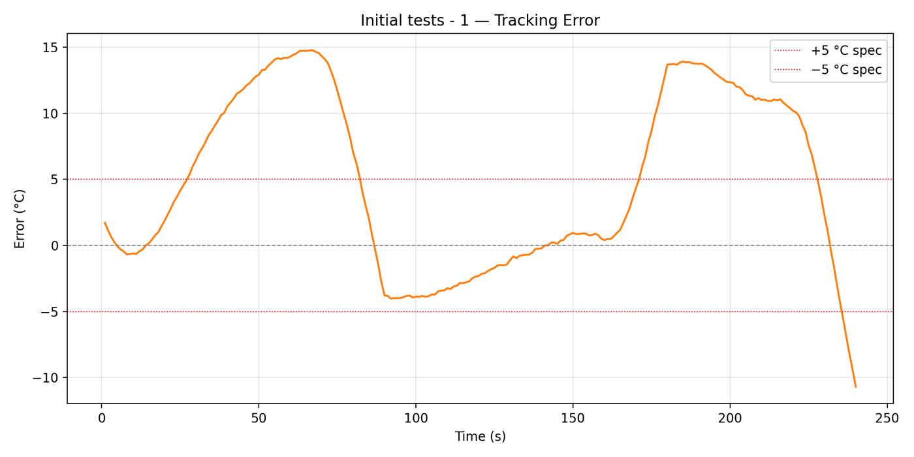
ErrorWhat went wrong
After looking at the data, I found three issues:
- The dead time isn't constant. The 29.6 s dead time came from a bump test that started with a cold oven. Once the oven is hot, the dead time drops to about 5 s. So advancing the reference by 29.6 s pushed the oven way ahead of the profile for most of the cycle. To confirm this, I ran a test where I removed the dead-time advance after the preheat stage. The middle of the cycle got better, but the cold start got worse, which confirmed that \(\theta\) changes during the cycle.
- Feedforward is sensitive to the model. Since feedforward does most of the work, any mismatch between the model gain \(K\) and the real oven goes straight into the tracking error.
- The PI controller was too weak. The SIMC gains are on the conservative side, which is great when the model is accurate. Here, the model was off, and the PI controller didn't have enough authority to fix the error before the ramp was over.
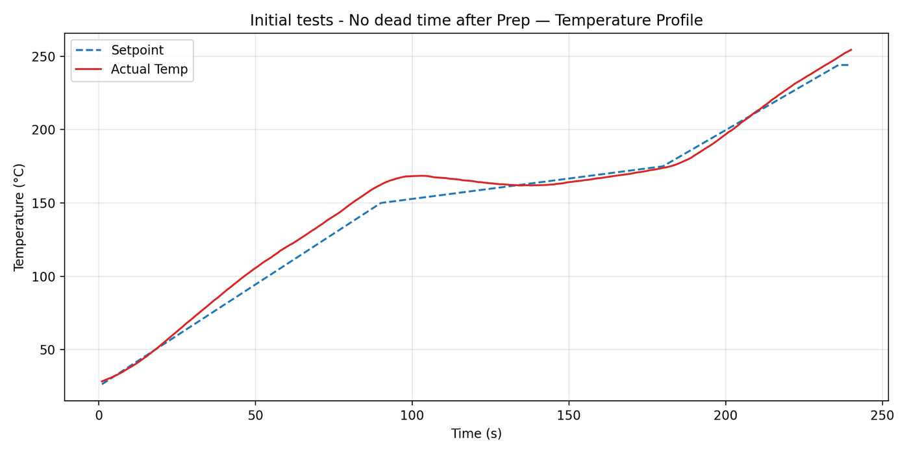
Temperature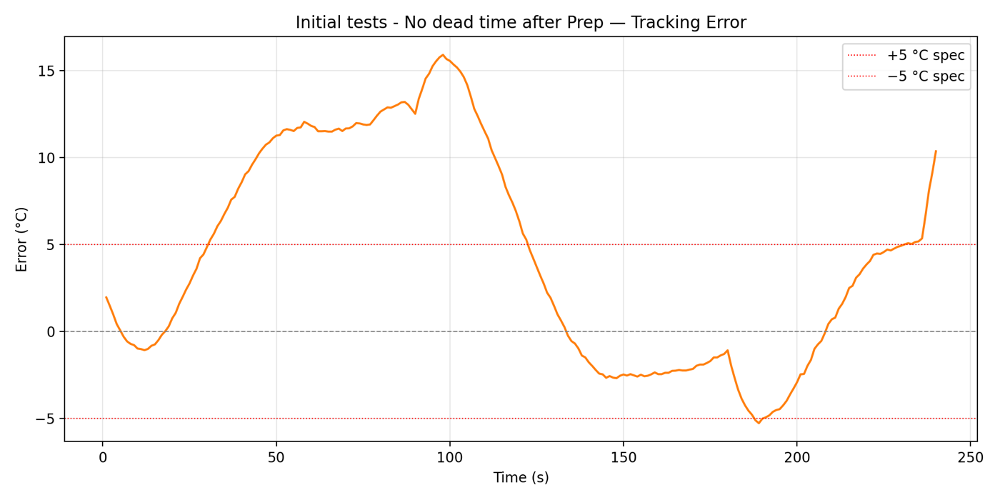
ErrorRedesign
Instead of jumping to something complicated like gain scheduling, I went back to the simulation and changed the design dead time from 29.6 s to 5 s to match what the oven does once it's warm. I kept the same SIMC structure and treated the proportional gain as a free parameter to sweep on the hardware.
Before flashing it, I checked it in simulation with the plant gain multiplied by 1.1 to fake a 10% model mismatch. The error still stayed within ±5°C, so it was worth trying on the oven.
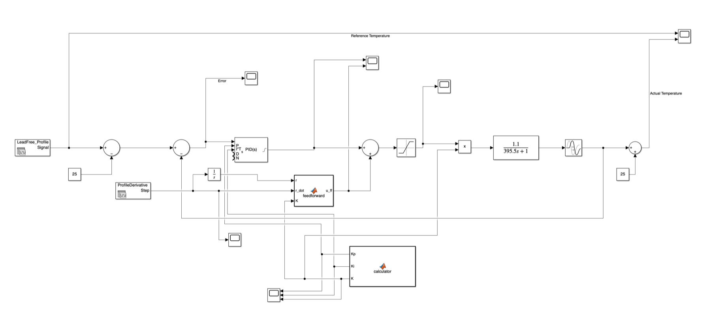
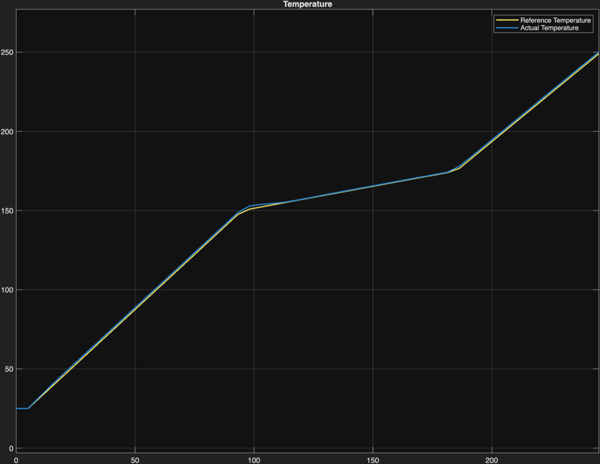
Temperature (°C)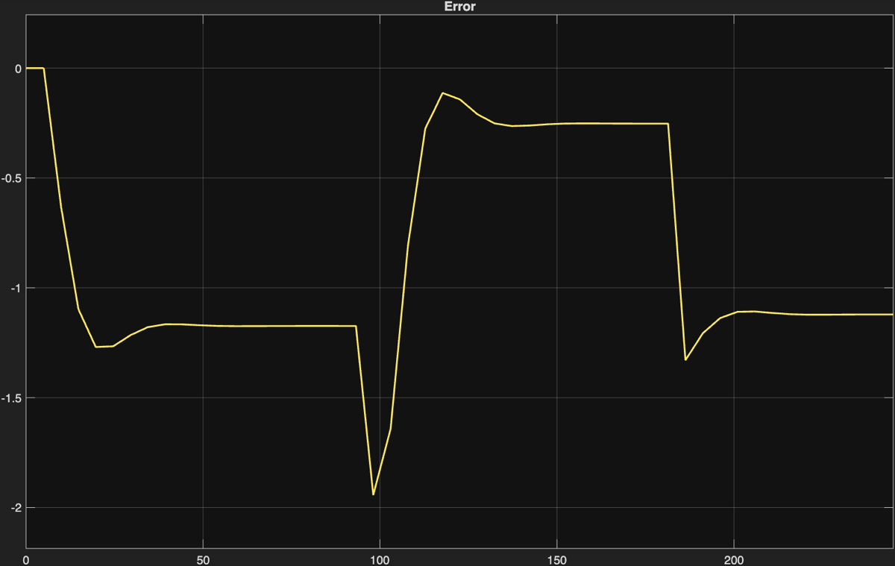
Error (°C)Tuning Kp on the oven
I tried 3 values of \(K_p\) on the real oven: 1×, 3×, and 5× the SIMC value. Below are the results.
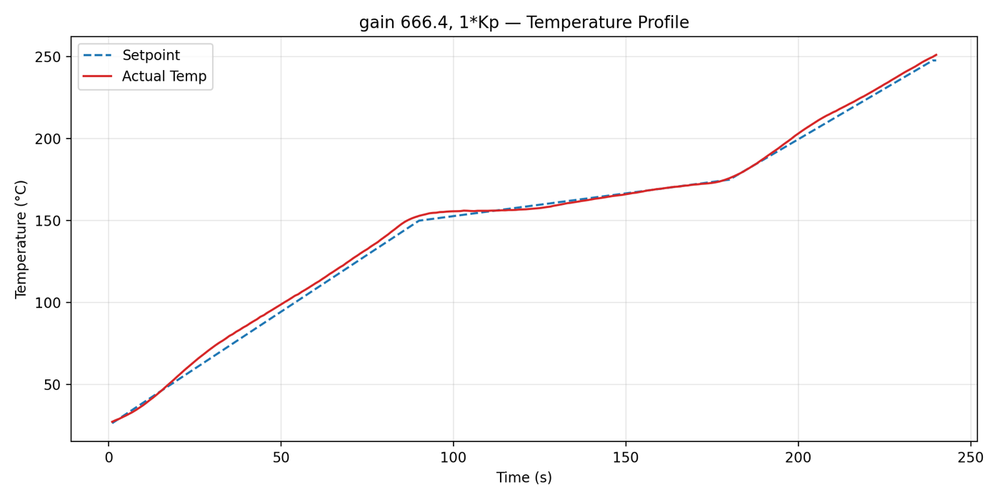
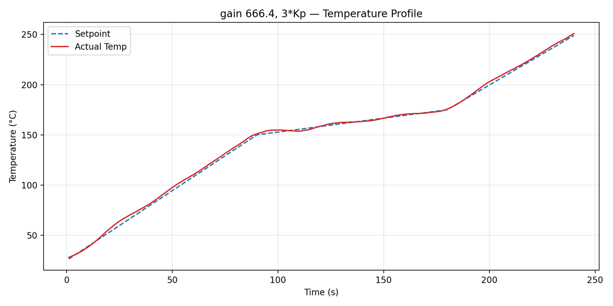
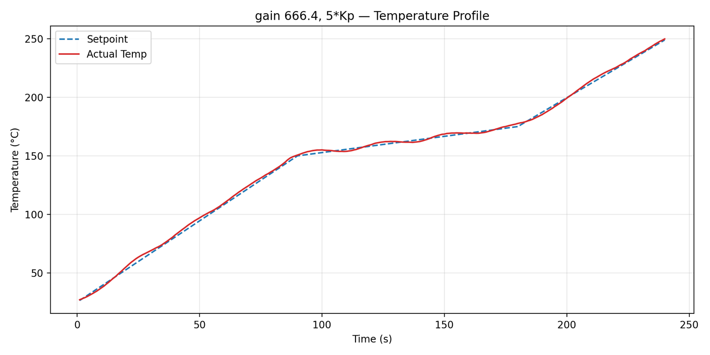
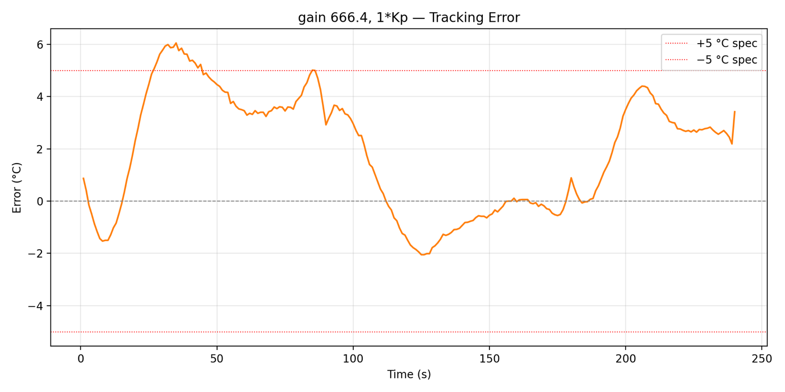
1× Kp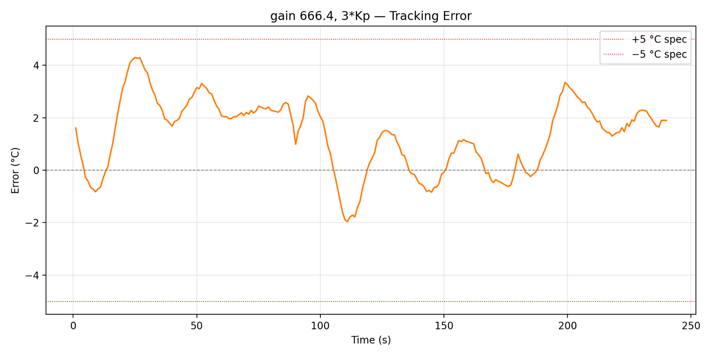
3× Kp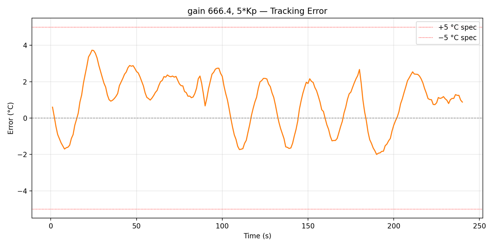
5× Kp| Kp | Result |
|---|---|
| 1× | Much better than the first run, but the error still drifts outside ±5°C on the steeper ramps. |
| 3× | Error band gets tighter, but small oscillations start showing up in the soak stage. |
| 5× | Error stays within ±5°C for the entire profile. There are some small oscillations in the soak, but it meets the spec. |
This is the classic trade-off: the more aggressive the controller, the tighter the tracking, but the more it oscillates. At 5× \(K_p\), the oscillations in the soak are small and harmless, so I went with that.
Robustness check
I wanted to make sure 5× \(K_p\) wasn't just a lucky tune that only works with this exact model. So I changed the model gain in the controller to \(K = 759.9\) (the value from the 25% duty bump test). This is a 14% mismatch from the design value of 666.4. The controller stayed stable and the error stayed within ±5°C.
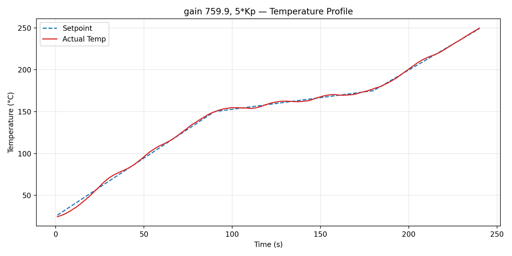
Temperature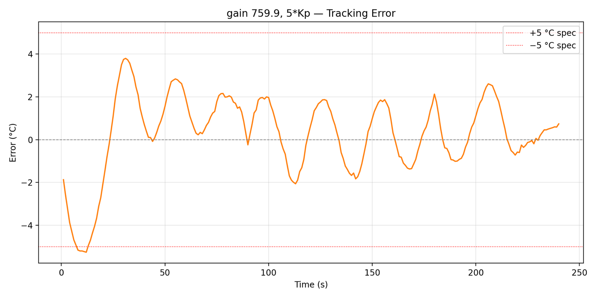
ErrorLimitations and future work
- Dead time: The controller uses one fixed dead time, but in reality, it changes as the oven heats up. Scheduling \(\theta\) with temperature or estimating it on the fly should give tighter tracking.
- Cooling: There's no active cooling, so the cooling stage is still open loop. Adding a fan or a vent would let the controller track the cooldown too.
- Automatic system identification: Right now, the bump tests are manual. I want the oven to run its own bump test and re-calculate \(K\), \(\tau\), and \(\theta\) by itself, so it can adapt as the heater ages or when the room temperature changes.
- Leaded profile: Add a leaded solder paste profile so the same oven can handle both.
What I learnt
- Simulation isn't reality. The simulation was nearly perfect, and the first hardware run was off by 15°C. The model is only as good as the assumptions behind it, and the one that broke here was the dead time being constant.
- Feedforward is powerful but picky. It's what made the ramps trackable, but when it's doing most of the work, a small error in the model turns into a big tracking error.
- Iterate. Simulate, test on hardware, figure out why they don't match, update the model, and repeat.
Conclusion
In the end, the oven now tracks the lead-free reflow profile within ±5°C and stays stable even with a 14% model mismatch. It still took a bit of tuning at the end (5× \(K_p\)), but this time, it was tuning with a reason behind it, and I can actually explain why the controller works.